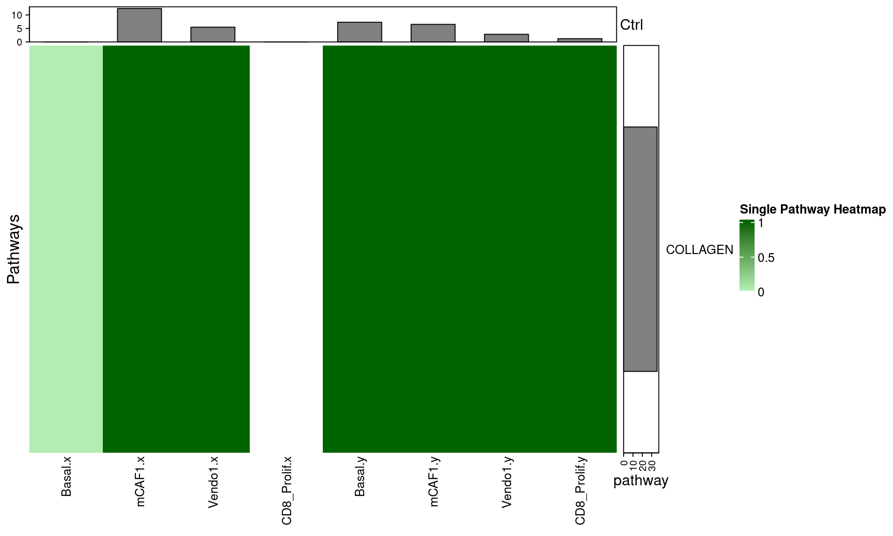
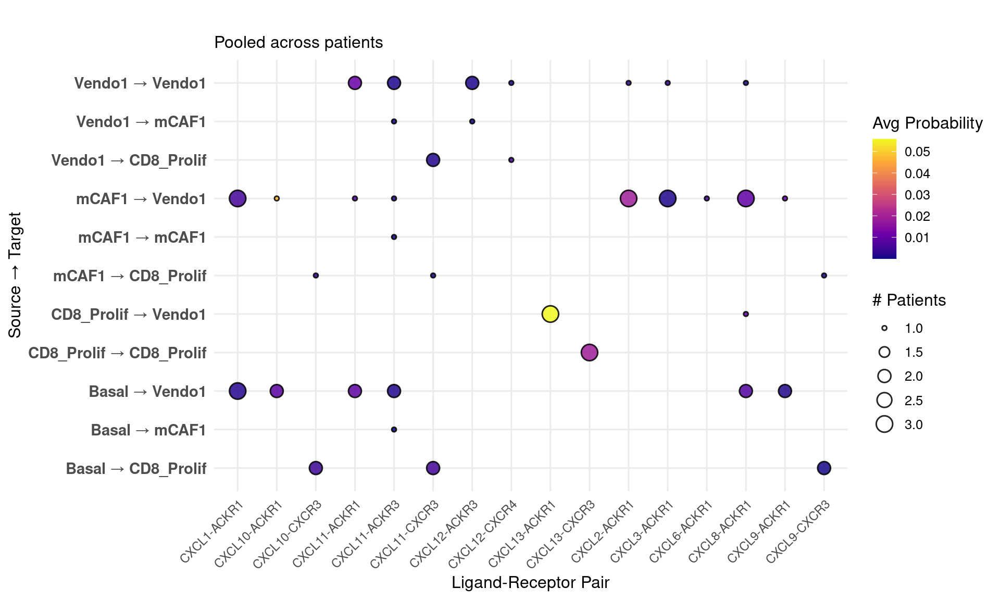

Introduction to CellChatCustomPlots
CellChatCustomPlots.RmdOverview
CellChatCustomPlots provides custom heatmap and bubble plot visualizations for CellChat objects to explore cell-cell communication patterns across single or multiple samples.
Functions
| Function | Description |
|---|---|
prephm() |
Preprocess CellChat data for heatmap |
makehm() |
Heatmap for a single CellChat object |
makehm_pooled() |
Pooled heatmap across multiple objects |
makehm_pooled_onepathway() |
Pooled heatmap for one pathway |
extract_cellchat_data() |
Extract LR interaction data across objects |
Load the Package and Example Data
library(CellChatCustomPlots)
data("example_CellChat_list")
data("example_DB")
length(example_CellChat_list)
#> [1] 5
names(example_CellChat_list)
#> [1] "bill1" "bill6" "peng5" "peng2" "kurten5"
# Available cell types
dimnames(example_CellChat_list[[1]]@netP$prob)[[1]]
#> [1] "Basal" "mCAF1" "CXCL8_iCAF" "Vendo1"
# Available pathways
dimnames(example_CellChat_list[[1]]@netP$prob)[[3]]
#> [1] "COLLAGEN" "MHC-I" "MHC-II" "CXCL" "MK" "CD99"
#> [7] "FN1" "LAMININ" "CCL" "APP"Single Sample Heatmap
library(circlize)
#> ========================================
#> circlize version 0.4.16
#> CRAN page: https://cran.r-project.org/package=circlize
#> Github page: https://github.com/jokergoo/circlize
#> Documentation: https://jokergoo.github.io/circlize_book/book/
#>
#> If you use it in published research, please cite:
#> Gu, Z. circlize implements and enhances circular visualization
#> in R. Bioinformatics 2014.
#>
#> This message can be suppressed by:
#> suppressPackageStartupMessages(library(circlize))
#> ========================================
# Define sources and targets
sources <- c("mCAF1", "Basal", "CD8_Prolif", "Vendo1") # replace with your cell types
targets <- c("mCAF1", "Basal","CD8_Prolif", "Vendo1") # replace with your cell types
# Define color scale
col_fun = circlize::colorRamp2(c(0, 0.005, 1), c("white", "darkseagreen2", "darkgreen"))
result <- makehm(
cellchatobj = example_CellChat_list[[1]],
col_fun = col_fun,
sources = sources,
targets = targets,
fontsize = 10,
hmtitle = "Sample Heatmap"
)
# Draw the heatmap
ComplexHeatmap::draw(result[[2]])
# Inspect the data matrix
head(result[[3]])
#> Basal.x mCAF1.x Vendo1.x Basal.y mCAF1.y Vendo1.y
#> COLLAGEN 0.00000000 4.94387884 1.9266054 1.28925132 3.99558782 1.58564514
#> LAMININ 0.44126810 1.14823761 1.4925551 0.46527477 1.18592376 1.43086228
#> FN1 0.00000000 0.84317450 0.0000000 0.10541061 0.40527967 0.33248422
#> CD99 0.07063680 0.29290094 0.3422526 0.06492148 0.27417717 0.36669166
#> MK 0.08089036 0.03359809 0.1003275 0.05662773 0.07675255 0.08143571
#> APP 0.02023613 0.06046706 0.1217141 0.00000000 0.10082451 0.10159276Multi Sample Heatmap
result_pooled <- makehm_pooled(
all_objects_list = example_CellChat_list,
col_fun = col_fun,
sources = sources,
targets = targets,
fontsize = 10,
hmtitle = "Pooled Heatmap"
)
ComplexHeatmap::draw(result_pooled[[2]])
Multi Sample Heatmap One Pathway
# Use first available pathway
pathway_of_interest <- dimnames(example_CellChat_list[[1]]@netP$prob)[[3]][1]
result_pathway <- makehm_pooled_onepathway(
all_objects_list = example_CellChat_list,
col_fun = col_fun,
sources = sources,
targets = targets,
fontsize = 10,
pathway = pathway_of_interest,
hmtitle = "Single Pathway Heatmap"
)
ComplexHeatmap::draw(result_pathway[[2]])
Bubble Plot
# Re-attach DB before using extract_cellchat_data
objects_with_db <- lapply(example_CellChat_list, function(obj) {
obj@DB <- example_DB
return(obj)
})
#> Loading required namespace: CellChat
lr_data <- extract_cellchat_data(
all_objects_list = objects_with_db,
sources.use = sources,
targets.use = targets,
signaling = "CXCL" #dimnames(example_CellChat_list[[1]]@netP$prob)[[3]][1]
)
#> Processing: bill1
#> Comparing communications on a single object
#> -> ADDED 22 rows
#> Processing: bill6
#> Comparing communications on a single object
#> -> ADDED 17 rows
#> Processing: peng5
#> Comparing communications on a single object
#> -> ADDED 19 rows
#> Processing: peng2
#> Comparing communications on a single object
#> -> ADDED 36 rows
#> Processing: kurten5
#> Comparing communications on a single object
#> -> ADDED 24 rows
#> Total: 118 interactions extracted
head(lr_data)
#> source target ligand receptor prob pval interaction_name
#> 1 Basal Vendo1 CXCL1 ACKR1 0.1847115 3 CXCL1_ACKR1
#> 2 mCAF1 Vendo1 CXCL1 ACKR1 0.2258684 3 CXCL1_ACKR1
#> 10 mCAF1 mCAF1 <NA> <NA> NA 1 <NA>
#> 11 mCAF1 Basal <NA> <NA> NA 1 <NA>
#> 12 mCAF1 <NA> <NA> <NA> NA 1 <NA>
#> 13 Basal mCAF1 <NA> <NA> NA 1 <NA>
#> interaction_name_2 pathway_name annotation evidence
#> 1 CXCL1 - ACKR1 CXCL Secreted Signaling PMID: 26740381
#> 2 CXCL1 - ACKR1 CXCL Secreted Signaling PMID: 26740381
#> 10 CXCL1 - ACKR1 <NA> <NA> <NA>
#> 11 CXCL1 - ACKR1 <NA> <NA> <NA>
#> 12 CXCL1 - ACKR1 <NA> <NA> <NA>
#> 13 CXCL1 - ACKR1 <NA> <NA> <NA>
#> source.target prob.original patient
#> 1 Basal -> Vendo1 0.004454465 bill1
#> 2 mCAF1 -> Vendo1 0.011946021 bill1
#> 10 mCAF1 -> mCAF1 NA bill1
#> 11 mCAF1 -> Basal NA bill1
#> 12 <NA> NA bill1
#> 13 Basal -> mCAF1 NA bill1
#plot
bubble_data <- lr_data %>%
group_by(source, target, ligand, receptor, interaction_name) %>%
summarise(
prob_avg = mean(prob.original, na.rm = TRUE),
n_patients = n_distinct(patient),
.groups = 'drop'
) %>%
dplyr::filter(prob_avg > 0, n_patients > 0)
# Create interaction label
bubble_data$interaction_label <- paste0(bubble_data$ligand, "-", bubble_data$receptor)
# Bubble plot: size = # patients, color = avg prob
p1 <- ggplot(bubble_data,
aes(#x = reorder(interaction_label, prob_avg),
x = interaction_label,
y = paste(source, "→", target),
size = n_patients, # Size by # patients
fill = prob_avg)) + # Color by avg probability
geom_point(shape = 21, stroke = 0.8, alpha = 0.85) +
scale_size_continuous(range = c(1, 5), name = "# Patients") +
scale_fill_viridis_c(name = "Avg Probability", option = "plasma") +
labs(title = "",
subtitle = "Pooled across patients",
x = "Ligand-Receptor Pair", y = "Source → Target") +
theme_minimal(base_size = 12) +
theme(axis.text.x = element_text(angle = 45, hjust = 1, size = 9),
axis.text.y = element_text(size = 11, face = "bold"),
legend.position = "right")
print(p1)